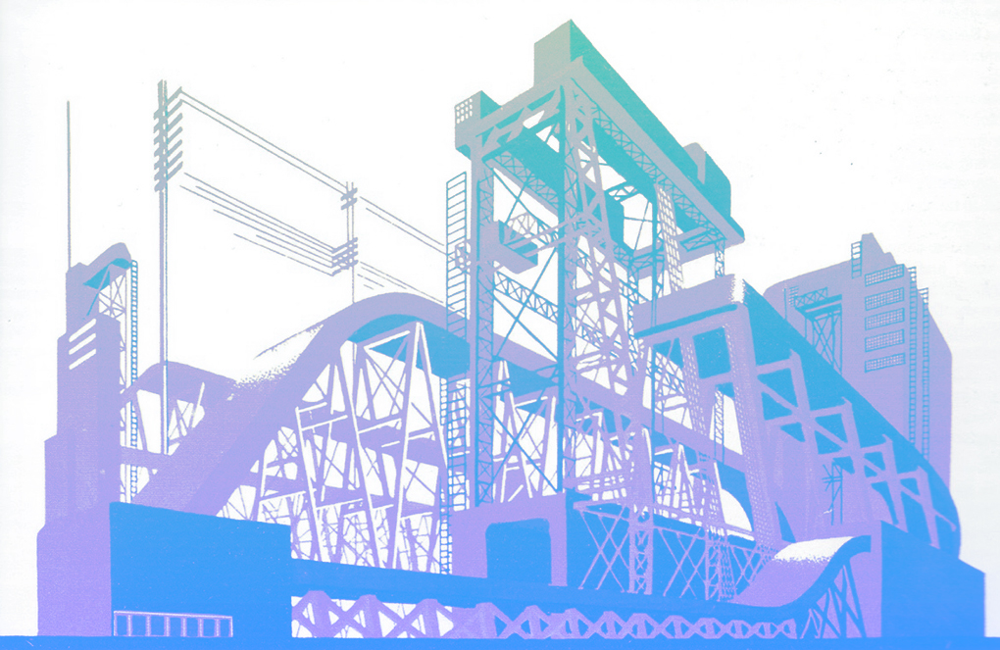

Конструктивизм (искусство)
Конструктиви́зм — авангардистское направление в изобразительном искусстве, архитектуре, фотографии и декоративно-прикладном искусстве, зародившееся в 1920 — первой половине 1930 годов в СССР.
Особенности стиля
Характеризуется строгостью, геометризмом, лаконичностью форм и монолитностью внешнего облика. В архитектуре принципы конструктивизма были сформулированы в теоретических выступлениях А. А. Веснина и М. Я. Гинзбурга, практически они впервые воплотились в созданном братьями А. А., В. А. и Л. А. Весниными проекте Дворца труда для Москвы (1923) с его чётким, рациональным планом и выявленной во внешнем облике конструктивной основой здания (железобетонный каркас). В 1926 году была создана официальная творческая организация конструктивистов — Объединение современных архитекторов (ОСА). Данная организация являлась разработчиком так называемого функционального метода проектирования, основанного на научном анализе особенностей функционирования зданий, сооружений, градостроительных комплексов. Характерные памятники конструктивизма — фабрики-кухни, Дворцы труда, рабочие клубы, дома-коммуны.
Применительно к зарубежному искусству термин «конструктивизм» в значительной мере условен: в архитектуре он обозначает течение внутри функционализма, стремившееся подчеркнуть экспрессию современных конструкций, в живописи и скульптуре — одно из направлений авангардизма, использовавшее некоторые формальные поиски раннего конструктивизма (скульпторы Н. Габо, А. Певзнер).
В указанный период в СССР существовало также литературное движение конструктивистов.
Появление конструктивизма
Конструктивизм принято считать советским явлением, возникшим после Октябрьской революции в качестве одного из направлений нового, авангардного, пролетарского искусства, хотя, как и любое явление в искусстве, он не может быть ограничен рамками одной страны. Так, провозвестником этого стиля в архитектуре явилась ещё Эйфелева башня, сочетающая в себе элементы как модерна, так и оголённого конструктивизма.
Как писал Владимир Маяковский в своём очерке о французской живописи: «Впервые не из Франции, а из России прилетело новое слово искусства — конструктивизм…»
В условиях непрекращающегося поиска новых форм, подразумевавшего забвение всего «старого», новаторы провозглашали отказ от «искусства ради искусства». Отныне искусство должно было служить производству, а производство — народу.
Большинство тех, кто впоследствии примкнул к течению конструктивистов, были идеологами утилитаризма или так называемого «производственного искусства». Они призывали художников «сознательно творить полезные вещи» и мечтали о новом гармоничном человеке, пользующемся удобными вещами и живущем в благоустроенном городе.
Так, один из теоретиков «производственного искусства» Борис Арватов писал, что «…будут не изображать красивое тело, а воспитывать настоящего живого гармоничного человека; не рисовать лес, а выращивать парки и сады; не украшать стены картинами, а окрашивать эти стены…»
«Производственное искусство» стало не более чем концепцией, однако сам по себе термин конструктивизм был произнесён именно теоретиками этого направления (в их выступлениях и брошюрах постоянно встречались также слова «конструкция», «конструктивный», «конструирование пространства»).
Помимо вышеуказанного направления на становление конструктивизма оказали огромное влияние футуризм, супрематизм, кубизм, пуризм и другие новаторские течения 1910-х годов в изобразительном искусстве, однако социально обусловленной основой стало именно «производственное искусство» с его непосредственным обращением к современным российским реалиям 1920-х годов (эпохи первых пятилеток).
Рождение термина
Термин «конструктивизм» использовался советскими художниками и архитекторами ещё в 1920 году: конструктивистами себя называли Александр Родченко и Владимир Татлин — автор проекта Башни III Интернационала. Впервые конструктивизм официально обозначен в том же 1922 году в книге Алексея Михайловича Гана, которая так и называлась — «Конструктивизм».
А. М. Ганом провозглашалось, что «…группа конструктивистов ставит своей задачей коммунистическое выражение материальных ценностей… Тектоника, конструкция и фактура — мобилизующие материальные элементы индустриальной культуры».
То есть явным образом подчёркивалось, что культура новой России является индустриальной.
Конструктивизм в архитектуре
В 1922—1923 годах в Москве, начавшей восстанавливаться после Гражданской войны, были проведены первые архитектурные конкурсы (на проекты Дворца труда в Москве, здания московского филиала газеты «Ленинградская правда», здания акционерного общество «Аркос»), в которых принимали участие архитекторы, начавшие творческий путь ещё до революции — Моисей Гинзбург, братья Веснины, Константин Мельников, Илья Голосов и др. Многие проекты были наполнены новыми идеями, позднее положенными в основу новых творческих объединений — конструктивистов и рационалистов. Рационалистами было создано объединение «АСНОВА» (Ассоциация новых архитекторов), идеологами которого были архитекторы Николай Ладовский и Владимир Кринский. Конструктивисты же объединились в ОСА (Объединение современных архитекторов) во главе с братьями Весниными и Моисеем Гинзбургом. Ключевым отличием двух течений стал вопрос о восприятии архитектуры человеком: если конструктивисты придавали наибольшее значение функциональному назначению здания, которое и определяло конструкцию, то рационалисты считали функцию здания второстепенной и стремились учитывать прежде всего психологические особенности восприятия.
Конструктивисты видели своей задачей увеличение роли архитектуры в жизни, и способствовать этому должны были отрицание исторической преемственности, отказ от декоративных элементов классических стилей, использование функциональной схемы как основы пространственной композиции. Конструктивисты искали выразительность не в декоре, а в динамике простых конструкций, вертикалей и горизонталей строения, свободе плана здания.
Ранний конструктивизм
Большое влияние на проектирование конструктивистских общественных зданий оказала деятельность талантливых архитекторов — братьев Леонида, Виктора и Александра Весниных. Они пришли к осознанию лаконичной «пролетарской» эстетики, уже имея солидный опыт в проектировании зданий, в живописи и в оформлении книг.
Впервые архитекторы-конструктивисты громко заявили о себе на конкурсе проектов здания Дворца Труда в Москве. Проект Весниных выделялся не только рациональностью плана и соответствием внешнего облика эстетическим идеалам современности, но и подразумевал использование новейших строительных материалов и конструкций.
Следующим этапом был конкурсный проект здания газеты «Ленинградская правда» (московского отделения). Задание было на редкость сложным — для строительства предназначался крохотный участок земли — 6×6 метров на Страстной площади. Веснины создали миниатюрное, стройное шестиэтажное здание, которое включало не только офис и редакционные помещения, но и газетный киоск, вестибюль, читальный зал (одна из задач конструктивистов заключалась в том, чтобы на малой площади сгруппировать максимальное количество жизненно необходимых помещений).
Ближайшим соратником и помощником братьев Весниных был Моисей Гинзбург. В своей книге «Стиль и эпоха» он размышляет о том, что каждый стиль искусства адекватно соответствует «своей» исторической эпохе. Развитие новых архитектурных течений, в частности, связано с тем, что происходит «…непрерывная механизация жизни», а машина есть «…новый элемент нашего быта, психологии и эстетики». Гинзбург и братья Веснины организовывают Объединение современных архитекторов (ОСА), в которое вошли ведущие конструктивисты.
C 1926 года конструктивисты начинают выпускать свой журнал — «Современная архитектура» («СА»). Выходил журнал на протяжении пяти лет. Оформлением обложек занимались Алексей Ган, Варвара Степанова и Соломон Телингатер.
Расцвет конструктивизма
Архитекторы зрелого конструктивизма использовали функциональный метод, основанный на научном анализе особенностей функционирования зданий, сооружений, градостроительных комплексов. Таким образом, идейно-художественные и утилитарно-практические задачи рассматривались в совокупности. Каждой функции отвечает наиболее рациональная объёмно-планировочная структура (форма соответствует функции).
На этой волне происходит борьба конструктивистов за «чистоту рядов» и против стилизаторского отношения к конструктивизму. Иначе говоря, лидеры ОСА боролись против превращения конструктивизма из метода в стиль, во внешнее подражательство, без постижения сущности. Так, нападкам подвергся архитектор Григорий Бархин, создавший Дом «Известий».
В эти же годы происходит увлечение конструктивистов идеями Ле Корбюзье: автор и сам приезжал в Россию, где плодотворно общался и сотрудничал с лидерами ОСА.
В среде ОСА выдвигается ряд перспективных архитекторов, таких, как братья Илья и Пантелеймон Голосовы, Иван Леонидов, Михаил Барщ, Владимир Владимиров. Конструктивисты активно участвуют в проектировании промышленных зданий, фабрик-кухонь, домов культуры, клубов, жилых домов.
Наиболее распространённым типом общественных зданий, воплотившим в себе основные принципы конструктивизма, стали здания клубов и домов культуры. Примером может служить дома культуры Пролетарского района Москвы, более известного как Дворец культуры ЗИЛа; строительство осуществлялось в 1931—1937 годах по проекту братьев Весниных. При создании проекта авторы опирались на известные пять принципов Ле Корбюзье: использование опор-столбов вместо массивов стен, свободная планировка, свободное оформление фасада, удлинённые окна, плоская крыша. Объёмы клуба подчёркнуто геометричны и представляют собой вытянутые параллелепипеды, в которые врезаны ризалиты лестничных клеток, цилиндры балконов.
Характерным примером воплощения функционального метода стали дома-коммуны, архитектура которых соответствовала принципу, высказанному Ле Корбюзье: «дом — машина для жилья». Известным примером зданий такого типа является общежитие-коммуна Текстильного института на улице Орджоникидзе в Москве. Автором проекта, реализованного в 1930—1931 годах, был специализировавшийся преимущественно на промышленной архитектуре Иван Николаев. Идея дома-коммуны предполагала полное обобществление быта. Концепция проекта была предложена самими студентами; функциональная схема здания была ориентирована на создание жёсткого распорядка дня студентов. Утром студент просыпался в жилой комнате — спальной кабине размером 2,3 на 2,7 м, вмещавшей только кровати и табуретки — и направлялся в санитарный корпус, где проходил как по конвейеру последовательно душевые, помещения для зарядки, раздевалки. Из санитарного корпуса жилец по лестнице или пандусу спускался в низкий общественный корпус, где проходил в столовую, после чего отправлялся в институт или же в другие помещения корпуса — залы для бригадной работы, кабинки для индивидуальных занятий, библиотеку, актовый зал. В общественном корпусе находились также ясли для детей до трёх лет, а на крыше была устроена открытая терраса. В результате проведённой в 1960-е годы реконструкции общежития первоначальный замысел строгого распорядка дня был нарушен. Другой известный пример — дом наркомата финансов в Москве. Он интересен как пример дома «переходного типа» от традиционного квартирного жилья к дому-коммуне. Подобных домов было построено шесть — четыре в Москве, по одному Екатеринбурге и Саратове; не все они сохранились до настоящего времени.
Особой фигурой в истории конструктивизма считается любимый ученик А. Веснина — Иван Леонидов, выходец из крестьянской семьи, начавший свой творческий путь с ученика иконописца. Его во многом утопические, устремлённые в будущее, проекты не нашли применения в те трудные годы. Сам Ле Корбюзье называл Леонидова «поэтом и надеждой русского конструктивизма». Работы Леонидова и теперь восхищают своими линиями — они невероятно, непостижимо современны.